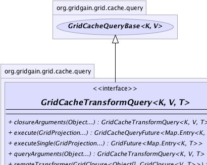
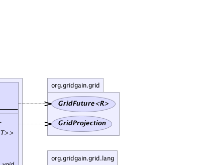
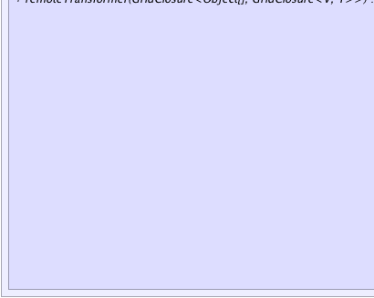
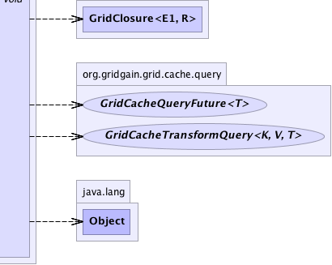

|
|

|

|
|

|

|

|
GridGain™ 3.6.0c
Community Edition |
|||||||||
| PREV CLASS NEXT CLASS | FRAMES NO FRAMES | |||||||||
| SUMMARY: NESTED | FIELD | CONSTR | METHOD | DETAIL: FIELD | CONSTR | METHOD | |||||||||
public interface GridCacheTransformQuery<K,V,T>
Cache query with possible remote transformer. The execution sequence is
essentially identical to the one described in GridCacheQuery javadoc,
except that queried values are given to an optional transformer
directly on the queried node which should usually transform cached values into
smaller and more light-weight objects to return to caller. This technique allows
to save on network trips whenever only a subset of data from cached values needs
to be returned.
'Person' objects with lots of extra data.
GridCache<Long, Person> cache = G.grid().cache();
...
// Create query to get names of all employees working for some company.
GridCacheTransformQuery<UUID, Person, String> qry =
cache.createTransformQuery(SQL, Person.class,
"from Person, Organization where Person.orgId = Organization.id and lower(Organization.name) = lower(?)");
// Transformer to convert Person objects to String.
// Since caller only needs employee names, we only
// send names back.
qry.remoteTransformer(new CO<GridClosure<Person, String>>() {
@Override public GridClosure<Person, String> apply() {
return new C1<Person, String>() {
@Override public String apply(Person person) {
return person.getName();
}
};
}
});
// Query all nodes for names of all GridGain employees.
Collection<String> gridgainEmployeeNames = qry.with("GridGain").execute(G.grid()).get());
| Wiki | |
| Forum |
|  |  |
|  |  |
| Field Summary |
|---|
| Fields inherited from interface org.gridgain.grid.cache.query.GridCacheQueryBase |
|---|
DFLT_PAGE_SIZE |
| Method Summary | |
|---|---|
GridCacheTransformQuery<K,V,T> |
closureArguments(Object... args)
Optional arguments for closures to be used by GridCacheQueryBase.remoteKeyFilter(GridClosure),
GridCacheQueryBase.remoteValueFilter(GridClosure), and GridCacheTransformQuery.remoteTransformer(GridClosure). |
GridCacheQueryFuture<Map.Entry<K,T>> |
execute(GridProjection... grid)
Executes the query and returns the query future. |
GridFuture<Map.Entry<K,T>> |
executeSingle(GridProjection... grid)
Executes the query and returns the first result in the result set. |
GridCacheTransformQuery<K,V,T> |
queryArguments(Object... args)
Optional arguments that get passed into query SQL. |
void |
remoteTransformer(GridClosure<Object[],GridClosure<V,T>> factory)
Sets optional transformer factory to transform values returned from queried nodes. |
| Methods inherited from interface org.gridgain.grid.cache.query.GridCacheQueryBase |
|---|
className, className, clause, clause, enableDedup, enableDedup, id, includeBackups, includeBackups, keepAll, keepAll, metrics, pageSize, pageSize, readThrough, readThrough, remoteKeyFilter, remoteValueFilter, timeout, timeout, type |
| Methods inherited from interface org.gridgain.grid.GridMetadataAware |
|---|
addMeta, addMetaIfAbsent, addMetaIfAbsent, allMeta, copyMeta, copyMeta, hasMeta, hasMeta, meta, putMetaIfAbsent, putMetaIfAbsent, removeMeta, removeMeta, replaceMeta |
| Methods inherited from interface java.io.Closeable |
|---|
close |
| Method Detail |
|---|
GridCacheTransformQuery<K,V,T> queryArguments(@Nullable Object... args)
args - Optional query arguments.
GridCacheTransformQuery<K,V,T> closureArguments(@Nullable Object... args)
GridCacheQueryBase.remoteKeyFilter(GridClosure),
GridCacheQueryBase.remoteValueFilter(GridClosure), and GridCacheTransformQuery.remoteTransformer(GridClosure).
args - Optional query arguments.
void remoteTransformer(@Nullable
GridClosure<Object[],GridClosure<V,T>> factory)
GridCacheTransformQuery.closureArguments(Object...) method as a parameter and returns a closure
that transforms one value into another. Transformers are especially useful whenever
only a subset of queried values needs to be returned to caller and can help save on
network overhead. Transformer will usually take the queried values and return
smaller, more light weight values to the caller.
If factory is set, then it will be invoked for every query execution. If state of the transformer closure changes every time a query is executed, then factory should return a new transformer closure for every execution.
factory - Optional transformer factory to transform values on queried nodes.@GridEnterpriseFeature(value="Distributed queries are enterprise-only feature (local queries are available in community edition)") GridFuture<Map.Entry<K,T>> executeSingle(GridProjection... grid)
Note that if the passed in grid projection is a local node, then query will be executed locally without distribution to other nodes.
Also note that query state cannot be changed (clause, timeout etc.), except arguments, if this method was called at least once.
grid - Optional subgrid projection to execute this query on (if not provided, then the whole grid is used).
@GridEnterpriseFeature(value="Distributed queries are enterprise-only feature (local queries are available in community edition)") GridCacheQueryFuture<Map.Entry<K,T>> execute(GridProjection... grid)
'get(..)' methods on the returned future. If
GridCacheQueryBase.keepAll(boolean) flag is set to false, then 'get(..)'
methods will only return the last page received, otherwise all pages will be
accumulated and returned to user as a collection.
Note that if the passed in grid projection is a local node, then query will be executed locally without distribution to other nodes.
Also note that query state cannot be changed (clause, timeout etc.), except arguments, if this method was called at least once.
grid - Optional subgrid projection to execute this query on (if not provided, then the whole grid is used).
|
GridGain™ 3.6.0c
Community Edition |
|||||||||
| PREV CLASS NEXT CLASS | FRAMES NO FRAMES | |||||||||
| SUMMARY: NESTED | FIELD | CONSTR | METHOD | DETAIL: FIELD | CONSTR | METHOD | |||||||||
|
GridGain - Real Time Big Data
|
|
|
|